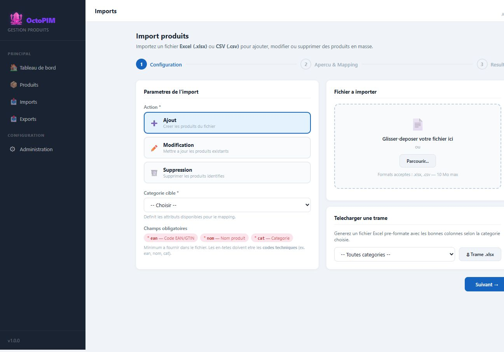

Fonction d’import
L’import permet d’ajouter, modifier ou supprimer des produits en masse a partir d’un fichier Excel ou CSV — le mode de travail actuel sur Excel doit pouvoir basculer ici.
Qu’est-ce que l’import ?
Un assistant en trois etapes : configuration, apercu et mapping, resultat.

A quoi ça sert ?
- Reprendre les fichiers fournisseurs ou l’Excel historique.
- Mettre a jour un lot de references sans passer fiche par fiche.
- Alimenter le referentiel unique avant les interfaces SAP / Snowflake.
Comment ça marche
Diagramme Mermaid (macro Confluence)
flowchart LR A[Configuration : action + categorie + fichier] --> B[Mapping colonnes vers attributs] B --> C[Controle des obligatoires] C --> D[Execution : matching EAN puis SAP] D --> E[Compte-rendu : crees / maj / erreurs]
| Point | Comportement |
|---|---|
| Colonnes du fichier | On mappe chaque colonne vers un attribut, de preference via l’identifiant (ex. ean, nom). Les en-tetes identiques a l’identifiant se proposent seuls. |
| Champs obligatoires | Ceux marques Obligatoire sur les attributs de la categorie (EAN, nom, categorie). SAP n’en fait pas partie. |
| Reconnaissance d’un produit | D’abord EAN/GTIN, sinon code SAP. |
| Pourcentages | Accepte 10 ou 10 % et stocke 0,10. |
| Marques nouvelles | Ajoutees au referentiel unique. |
Regles
RG-IMP-01 — Ajout / modification : tous les attributs obligatoires de la categorie doivent etre mappes et renseignes.
RG-IMP-02 — Suppression : EAN ou SAP suffit pour identifier la ligne.
RG-IMP-03 — L’import ne propose que les categories accessibles en ecriture (ou suppression).
RG-IMP-04 — Reconnaissance d’une ligne : d’abord l’EAN, sinon le SAP, sinon l’ensemble des obligatoires de la categorie. Une ligne en erreur est comptee et n’arrete pas le reste du fichier.
RG-IMP-05 — Un pourcentage accepte une saisie en % ou en nombre affiche et se stocke entre 0 et 1. Une marque inconnue est ajoutee au referentiel.
RG-IMP-02 — Suppression : EAN ou SAP suffit pour identifier la ligne.
RG-IMP-03 — L’import ne propose que les categories accessibles en ecriture (ou suppression).
RG-IMP-04 — Reconnaissance d’une ligne : d’abord l’EAN, sinon le SAP, sinon l’ensemble des obligatoires de la categorie. Une ligne en erreur est comptee et n’arrete pas le reste du fichier.
RG-IMP-05 — Un pourcentage accepte une saisie en % ou en nombre affiche et se stocke entre 0 et 1. Une marque inconnue est ajoutee au referentiel.
Cible
Traitement serveur, quotas, journal d’erreurs consultable, pas un traitement uniquement navigateur.